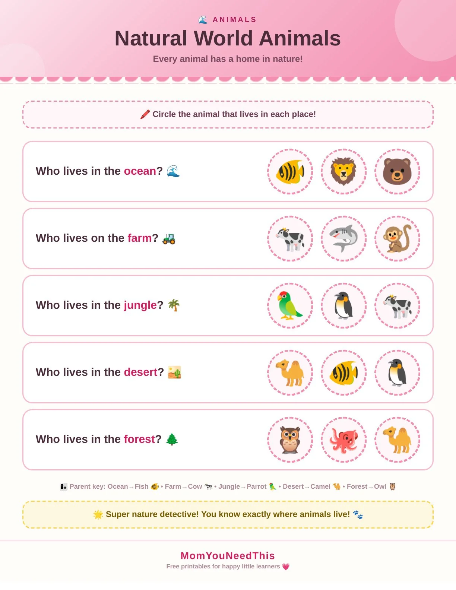

🌎 Our Natural World Exploring Earth Together
Celebrate the amazing planet we share with animals big and small. These activities nurture a love of nature and a gentle sense of caring for the world around us.
Quick Answer
This free printable natural world activity helps toddlers and preschoolers (ages 2–5) explore ecosystems — the webs of animals, plants, water and weather that make up a place — and the homes (habitats) animals live in: burrows, nests, ponds, webs and dens. Kids learn about animal homes and discover simple ways we can care for our natural world. Download and print at home with no signup needed.
At a Glance
- Ages: Toddlers and preschoolers (ages 2–5)
- Activity: Exploring ecosystems and animal homes
- Skills: Habitat knowledge and caring for nature
- Format: Printable worksheet (PDF)
- Cost: Free, no signup
A habitat is an address with everything delivered: food, water, shelter and room to raise a family, all in one place. This page teaches children to read a place the way an animal reads it — not “a park” but a menu, a nursery and an apartment building stacked together — and to pick one real place near home as their field site for the whole topic.
🌎 Explore Our Natural World
Explore ecosystems, learn about animal homes, and discover simple ways we can care for our natural world.
💡 How To Use This Activity
Print the pages and choose one place near home as your field site — a park, a garden corner, even a balcony. Match the animals and habitats on paper to what actually lives there, and let your child add one discovery of their own to the page. The print button opens the full-size page in a new tab if you prefer to print from there.

🖨️ Download Your Free Our Natural World Printable
Explore ecosystems, learn about animal homes, and discover simple ways we can care for our natural world. Print it out, grab the crayons, and you're ready — no signup needed.
⬇️ Download Free Printable 🖨️ Print🎁 Free printable for toddlers & preschoolers
🌎 Every Animal Has An Address
The pond is a stacked city: frogs at the surface, fish in the middle shade, snails on the stems, herons shopping the shallows. One pond can hold more species than a whole street of gardens, because water delivers food to everyone.
The forest floor runs on recycling: fallen leaves feed fungi and beetles, beetles feed birds, and a rotting log is a nursery, a pantry and an apartment block at once. Nothing in a forest is wasted; it is only between jobs.
The meadow is the pollinators' highway — flowers for food, long grass for hiding, and hunting grounds for the kestrels hovering above it. The desert inverts everything: animals sleep through the scorching day underground and hold the night shift instead.
Caring for the natural world is the page's last lesson, kept practical and small: leave homes as you found them (a turned stone gets turned back), take litter out even when it is not yours, plant something that feeds somebody, and watch more than you touch. A child who has a field site — one pond, one tree, one corner — has a piece of the natural world with their name on it, and people protect what they can name.
❓ Our Natural World FAQs
What activities are included in Our Natural World?
This page collects our free natural world printables in one place: exploring ecosystems, learning about animal homes (burrows, nests, ponds, dens), and discovering simple ways we can care for our natural world. Download the printable below and start learning right away.
Are these activities really free?
Yes — every printable on MomYouNeedThis is 100% free to download and print. No signup, no payment, just tap the download button. One real place near home — a park, a garden corner, even a balcony with a planter — is the only field trip this set requires. One real place near home — a park, a garden corner, even a balcony with a planter — is the only field trip this set requires.
How do I use these activities with my child?
Print the pages and choose one place near home as your field site — a park, a garden corner, even a balcony. Match the animals and habitats on paper to what actually lives there, and revisit across the seasons: the site changes, the address stays, and your child watches a habitat breathe through the year.